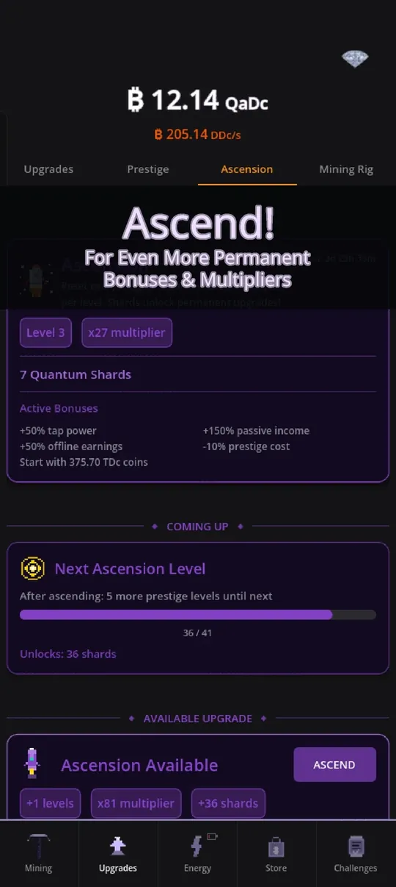

Every idle game has a reset button, and in Crypto Mining Tycoon there are two of them. This guide explains how prestige works in Crypto Mining Tycoon and how Ascension builds on top of it, so you know when to press each one and what you actually keep. If you are brand new, start with the beginner tips first. You can play along from Google Play.
What prestige does
Prestige resets your run: your coins and upgrades go back to the start, and in return you gain prestige levels. Each level gives you a permanent multiplier, so the second run is much faster than the first. That is the core loop of the game: grow, reset, grow faster.
The cost of a prestige level is based on how many coins you have. The first level needs 1 billion coins, and each next level costs roughly 10 times as much. Past level 35 the step softens slightly, and past level 50 it eases further, so deep prestige stays reachable instead of turning into a wall.

Reading the Prestige screen
The screen is built so you never have to calculate anything yourself:
- Level and multiplier: your current prestige level and the total multiplier it gives.
- Active bonuses: milestone perks you already unlocked, such as extra tap power, passive income or cheaper upgrades.
- Coming up: how many coins you need for the next level and which milestone is next.
- Prestige Available: appears when you can prestige, and shows how many levels and how much multiplier you would gain.
Prestige milestones are the part many players underrate. There is a ladder of perks that start at level 3 and run up to level 100, with special unique rewards at levels 50, 75 and 100. Aiming for the next milestone gives you a concrete goal for each run.
When to press the button
A simple rule works well: prestige when the gain is large compared to what you already have. Pressing as soon as it is available is fine early on, because runs are short. Later, waiting a little can give you several levels in one press, since the screen shows "+2 levels" or more when you have built up enough coins. You can also unlock Automation Suite, a lifetime pack that adds auto-prestige at a multiplier you choose, but it is optional. Nothing in the game forces you to buy it.
Prestige also feeds other systems. Your first prestige unlocks the Lab, where you spend Research Points on a tree of upgrades. Each prestige gives Research Points, and the tree is described in how to progress faster.
What Ascension is
Ascension is the second layer. Where prestige resets coins and upgrades, Ascension resets your prestige progress as well, and gives you something bigger: a stronger multiplier and Quantum Shards. You need at least 10 prestige levels for your first Ascension, and every further Ascension asks for 3 more prestige levels than the last one. At higher Ascension levels there are extra gates on top, such as completing a number of challenges or levelling your power plants, so Ascension also rewards you for using the whole game.

Quantum Shards and what to buy
Shards are the currency of Ascension. You spend them on permanent shard upgrades, for example bonuses to tap power, passive income, offline earnings, lucky strikes, energy capacity and regeneration, cheaper prestige and extra starting coins after a reset. If you change your mind, you can respec: the game refunds every shard you spent for a coin fee.
The Ascension screen in the picture above also shows its own active bonuses, such as +50% tap power, +150% passive income and +50% offline earnings at level 3. Ascension also unlocks the later power plants in the Energy tab, which is another reason to look forward to it.
Prestige or Ascension first?
You will naturally do prestige many times before your first Ascension. Treat prestige as your everyday rhythm and Ascension as the milestone you plan around: save up the required levels, check the gates on the Ascension tab, and press it when the shard reward is worth it. The game tells you exactly how many prestige levels are left until the next one.
Common mistakes
- Pressing prestige with no real gain. Check the "levels" and "multiplier" chips first.
- Ignoring the milestone bar, which shows the next perk you are working toward.
- Forgetting the Ascension gates until you reach the prestige level, then needing extra challenges.
If you wonder how this loop compares to the wider genre, read idle clicker games explained.
A worked example
Say you are at prestige level 36, like in the screenshot above. The next level needs about 57.79 quadrillion coins, and the screen shows a progress bar toward it. Your milestone bar says the next perk, +50% tap power, is two levels away. You could press prestige now and gain the levels you can afford, or keep building a little longer so one press covers both levels and reaches the milestone at once. Because the screen shows "+2 levels" and the resulting multiplier before you confirm, you can compare the two options without doing any maths.
The same idea applies to Ascension: its card shows the levels, the multiplier and the shards you will gain, so you can wait until the shard reward is worth a reset. And because energy plants, managers and research survive both resets, nothing you invest there is lost when you restart.
Try it
Want to see the multipliers for yourself? Download Crypto Mining Tycoon on Google Play and reach your first prestige. It is a game, not real crypto, and it is built to be played in short sessions.
Frequently Asked Questions
What do I lose when I prestige?
Prestige resets your coins and upgrades and gives permanent prestige levels and a multiplier in return. Active boosts you paid for, your energy plants, managers and research carry on through the reset.
What do I need for my first Ascension?
You need at least 10 prestige levels. Each further Ascension asks for 3 more prestige levels, and at higher Ascension levels extra gates such as completed challenges or plant level-ups apply.
Can I undo my shard upgrades?
Yes. You can respec your shard upgrades: the game refunds every Quantum Shard you spent, and you pay a fee in coins to do it.